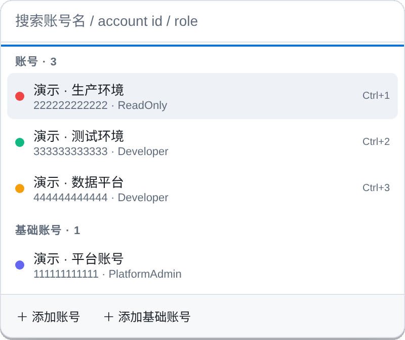
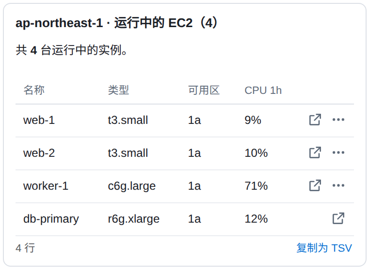
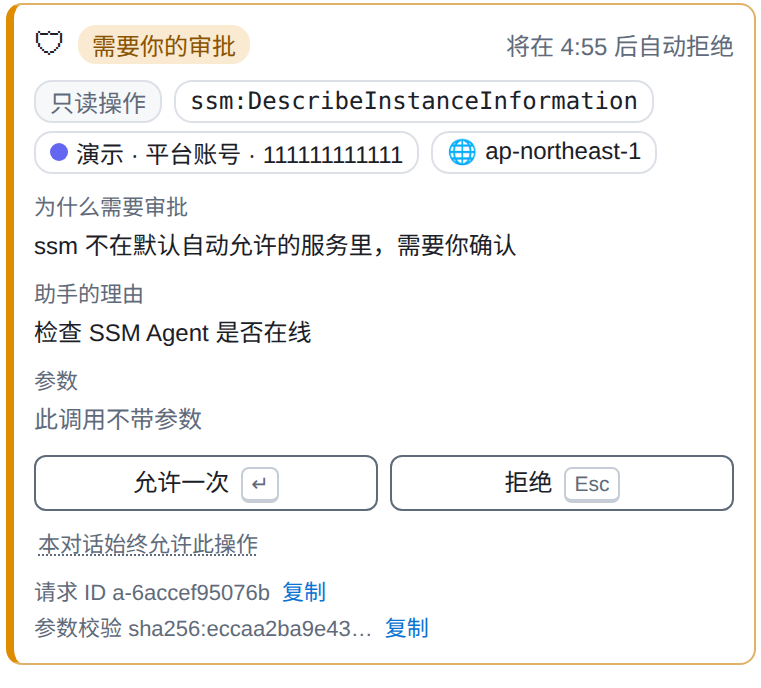
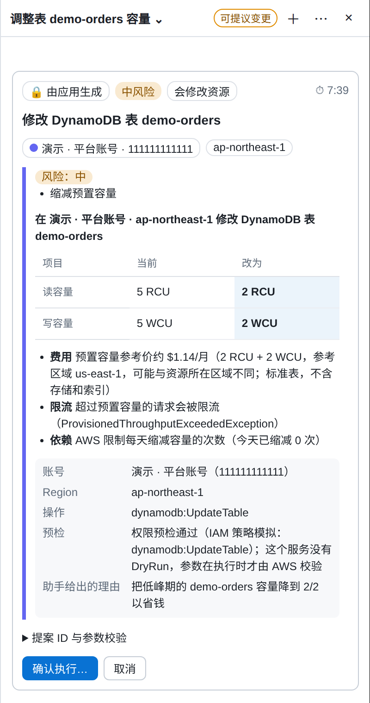
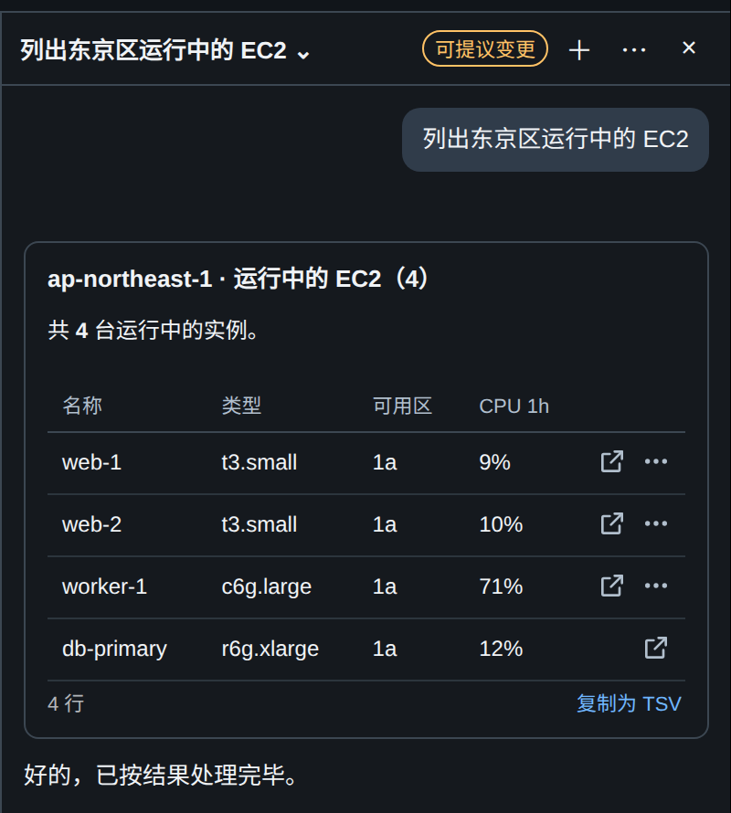

给经常切换 AWS 账号的人 · macOS 应用

当前高亮 · 演示数据生产环境 · ReadOnly · ap-northeast-1
以前
现在
一个窗口，
每个账号独立会话。
账号保持各自的登录状态；用 ⌘1–9 切换，用 ⌘K 直接跳到要看的服务。最近访问和固定项留在窗口底部，每个账号也有自己的标签页。
⌘K / 快速跳转
把账号、服务、区域
写在一行。
例如输入 prod lambda tokyo，在对应账号中打开东京区的 Lambda。
⌘I / AI 助手
查询可以快。
决定必须由你来做。
默认只读。按账号开启后，助手可以提出变更；变更由应用生成的卡片展示，要经过两步确认才执行。

演示数据
演示数据
演示数据先看清，再确认。
默认只读，查询结果以卡片呈现。
没有一键放行所有调用的总开关。审批只对单个操作生效：允许一次，或在本对话内允许同一个操作（限这个服务·操作·账号·区域，敏感读取和所有变更都没有这个选项）。你自己聚焦并按键，模型不能代你操作。
按账号开启后，助手只能提出提案。核对应用生成的卡片，再进行两步确认。

演示数据数据去向
知道哪些留在本机，
哪些会发出去。
凭证与会话各有去处；使用 AI 助手时，部分上下文会发送给你选的服务商。
你配置的凭证命令在本机 shell 中运行；命令本身不会发给模型。
命令输出的临时密钥只留在内存。各账号的 Console 登录 cookie 等会话数据按账号分区存于磁盘。
应用没有遥测。账号列表、最近访问、操作日志与 AI 对话等数据保存在本机。
启用 AI 助手后，数据会发给你配置的 LLM 服务商。包括提问、页面上下文和脱敏后的工具结果。
安装 / 从源码运行
从仓库开始。
需要 macOS、Node.js ≥ 22.19，以及一条可在终端获取临时 AWS 凭证的命令。README 列出了账号配置和凭证命令的格式。
打包产物未签名。macOS 打包后的实际运行、真实 AWS Console 会话与真实模型行为尚未完成验证。
git clone https://github.com/domechn/aws-console-hub.gitcd aws-console-hubnpm installnpm run devnpm run distnpm run dev：开发模式 / npm run dist：未签名 macOS 目录产物
开源、MIT、欢迎试用和提 issue。
在 GitHub 查看 ↗